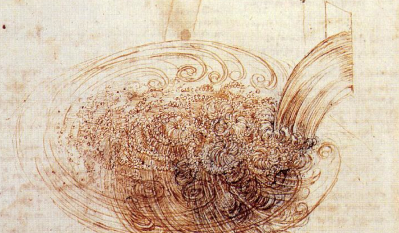

Ensino (Teaching)
Table of Contents
- 1. TEA-010 Matemática Aplicada I
- 2. EAMB-7003 Camada-Limite Atmosférica e Modelos de Dispersão Atmosférica
- 3. EAMB-7021 Mecânica dos Fluidos Ambiental Intermediária
- 4. TEA-034 Tópicos Especiais em Engenharia Ambiental: Técnicas de Aprendizagem Acadêmica
- 5. TEA-013 Matemática Aplicada II
- 6. TEA-752 Métodos Matemáticos em Engenharia Ambiental
- 7. TEA-757 Camadas-Limite Naturais e Transporte de Poluentes
- 8. EAMB-7009 Dinâmica espectral da turbulência
This site is searchable. See HELP on the right (you may need to click around a few times until HELP shows up).
1 TEA-010 Matemática Aplicada I
1.1 Ementa
1- Ferramentas computacionais para programação e processamento simbólico. 2- Revisão de programação científica. 3- Vetores, matrizes e coordenadas. 4- Campos escalares e vetoriais. 5- Equações diferenciais de 1a e 2a ordens. 6- Teoria de variáveis complexas: analiticidade, séries. 7- Soluções em série de equações diferenciais. 8- Transformada de Laplace. 9- Teoria de Distribuições. 10- Teoria de variáveis complexas: teorema do resíduo e integração de contorno.
1.2 Sala e Horário
- Aulas: 2as, 4as e 6as, 07:30–09:10 Sala PG-07
- Atendimento: Por agendamento em minha sala
1.4 Programa: tea010-prog-2019-1.pdf
1.5 Livro-texto
1a edição (com ISBN; deve ser usada em citações): matappa-1ed.pdf
2a edição (versão mais recente com adições e correções; ainda sem ISBN) : matappa-2ed.pdf
1.6 Notas
Veja as notas até a P3
2019-03-23: Estão abertas as revisões da P1.
2019-04-30: Estão encerradas as revisões da P1. Estão abertas as revisões da P2.
2019-05-25: Estão encerradas as revisões da P2. Estão abertas as revisões da P3.
1.7 Provas e Trabalhos
1.7.1 TC1
1.7.2 TC2
1.7.3 TC3
1.7.4 TC4
1.8 Gabaritos
Faça o download do gabarito da P1: 2019-1-p01-sol.pdf
Faça o download do gabarito da P2: 2019-1-p02-sol.pdf
Faça o download do gabarito da P3: 2019-1-p03-sol.pdf
2 EAMB-7003 Camada-Limite Atmosférica e Modelos de Dispersão Atmosférica
2.1 Ementa
Ementa: Balanço de energia na superfície; Balanço de radiação próximo à superfície: leis da radiação , divergência de fluxo de energia; Temperatura do solo e transferência de calor: temperatura na superfície e subsuperfície , teoria de transferência de calor no solo; Temperatura e umidade na camada limite planetária: relações termodinâmicas básicas , estabilidade estática , camadas de mistura e inversões , perfis verticais de temperatura e umidade; distribuição do vento na camada limite planetária; Escoamentos viscosos: escoamentos laminares e turbulentos , equações do movimento , camadas de Ekman , transferência de calor em fluidos; Fundamentos da turbulência atmosférica: instabilidade , características gerais da turbulência , variáveis médias e perturbações , variâncias e fluxos turbulentos; Teorias semi-empíricas da turbulência: descrição matemática dos escoamentos turbulentos , teorias de similaridade; Camadas limite neutras; Teoria da similaridade de Monin-Obukhov; Métodos para determinação dos fluxos de quantidade de movimento e calor; Fatores que controlam a dispersão de poluentes na atmosfera; Elevação de uma pluma de poluentes: elevação em condições neutras e estáveis; Efeito da turbulência ambiente nas plumas; Dispersão na camada limite convectiva: estrutura da camada limite convectiva , características das plumas de dispersão; Dispersão na camada limite estável: modelos de dispersão na camada limite estável.
2.2 Sala de Aula e Horário
2as e 4as, PF-12, 13:30–15:10
2.3 Programa: eamb7003-prog-2019-1.pdf
2.4 Notas de aula:
Atenção! As notas estão em preparação e devem ser lidas à luz dos comentários feitos em sala. Seu uso por não-alunos da disciplina não é recomendado. Favor não citar como referência, nem redistribuir.
2.5 Provas
Faça o download do gabarito da P1: eamb7003-2019-1-p01-sol.pdf
Faça o download do gabarito da P2: eamb7003-2019-1-p02-sol.pdf
3 EAMB-7021 Mecânica dos Fluidos Ambiental Intermediária

3.1 Ementa
Ementa: Teorema do Transporte de Reynolds e Balanços Integrais em Volume de Controle para Massa, Quantidade de Movimento, Energia, Quantidade de Movimento Angular, e Entropia. Equações na Forma Diferencial. Apresentação das Equações de Navier-Stokes e da Equação da Difusão-Advecção. Escoamentos em condutos. Introdução à turbulência. Camada Limite.
3.2 Sala de Aula e Horário
2as e 4as, PF-16, 09:30–11:10
3.3 Programa: tea782-prog-2018-1.pdf
3.4 Notas de aula: maine.pdf
3.5 Provas
Faça o download do gabarito da P1: eamb7021-2018-1-p01-sol.pdf
Faça o download do gabarito da P2: eamb7021-2018-1-p02-sol.pdf
–
4 TEA-034 Tópicos Especiais em Engenharia Ambiental: Técnicas de Aprendizagem Acadêmica
4.1 Horário
- Aulas: 6as, PF-2, 07:30–09:10
- Atendimento: Por agendamento em minha sala
4.2 Programa: tea034-prog-2017-1.pdf
4.3 Avaliação da disciplina pelos alunos: Esta disciplina nunca foi avaliada
4.4 Notas
Veja abaixo as notas finais da disciplina
| GRR | Nota |
|---|---|
| GRR20141496 | 3.0 |
| GRR20141697 | 9.0 |
| GRR20141639 | 9.0 |
| GRR20151802 | 9.5 |
| GRR20148696 | 10.0 |
| GRR20142181 | 10.0 |
| GRR20156128 | 8.5 |
| GRR20150066 | 8.0 |
| GRR20159026 | 10.0 |
| GRR20148707 | 10.0 |
5 TEA-013 Matemática Aplicada II
5.1 Ementa
1- Ferramentas computacionais e solução numérica com diferenças finitas de equações diferenciais parciais: análise de estabilidade de von Neumman e exemplos escolhidos entre a equação da difusão, equação da onda, equação de Laplace, e outras de uso comum em Engenharia Ambiental. 2- Análise linear, sistemas lineares em Engenharia. 3- Séries e Transformadas de Fourier. Solução de equações diferenciais, análise espectral e análise de periodicidade em séries de dados naturais. 4- Funções de Green e Identidades de Green em Engenharia: Hidrógrafa Unitária Instanânea, Problemas de Dispersão de Poluentes. 5- Teoria de Sturm-Liouville e algumas funções especiais adicionais (Legendre, Laguerre, Hermite). Importância da teoria no método de separação de variáveis para equações diferenciais parciais. 6- Equações Diferenciais Parciais: problemas lineares e não-lineares em escoamentos na atmosfera, nos oceanos, em rios e no solo, e problemas de dispersão de poluentes. 7- Classificação e o método das características: escoamento em canais. Solução por separação de variáveis, transformadas integrais e transformada de Boltzmann.
5.2 Horário
- Aulas: 2as, 4as, 6as, 07:30–09:10 PM02
- Atendimento: Por agendamento em minha sala
5.4 Programa: tea013-prog-2018-2.pdf
5.5 Livro-texto: matappa-2ed.pdf
5.6 Notas
Veja as notas até a F
2018-10-05T10:41:19 Estão encerradas as revisões da P1. Estão abertas as revisões da P2.
2018-11-17: Estão encerradas as revisões da P2. Estão abertas as revisões da P3.
2018-12-03: Estão encerradas as revisões da P3. Estão abertas as revisões da P4.
2018-12-10: Estão encerradas as revisões da P4. Estão abertas as revisões da F.
5.7 Provas e Trabalhos
5.7.1 TC1
5.7.2 TC2
5.7.3 TC3
5.8 Gabaritos
Faça o download do gabarito da P1: 2018-2-p01-sol.pdf
Faça o download do gabarito da P2: 2018-2-p02-sol.pdf
Faça o download do gabarito da P3: 2018-2-p03-sol.pdf
Faça o download do gabarito da P4: 2018-2-p04-sol.pdf
Faça o download do gabarito da F: 2018-2-f-sol.pdf
5.9 Arquivos com as soluções de provas passadas
6 TEA-752 Métodos Matemáticos em Engenharia Ambiental
6.1 Ementa
Ementa: Tensores cartesianos. Funções de várias variáveis: Teorema da função implícita. Jacobiano. Sistemas de coordenadas não-cartesianas. Método das características. Transformada de Boltzmann. Teoria de Sturm-Liouville. Séries de Fourier e Equações Diferenciais Parciais: método de separação de variáveis.
6.2 Horário
2as e 4as, PF-16, 09:30–11:10
6.3 Programa: tea752-prog-2017-1.pdf
6.4 Programa-como-realizado: tea752-prog-2017-1-check.pdf
6.5 Notas de aula: apple.pdf
6.6 Provas
Faça o download do gabarito da P1: tea752-2017-1-p01-sol.pdf
Faça o download do gabarito da P2: tea752-2017-1-p02-sol.pdf
Faça o download do gabarito da P3: tea752-2017-1-p03-sol.pdf
7 TEA-757 Camadas-Limite Naturais e Transporte de Poluentes
7.1 Ementa
Revisão das equações de Navier-Stokes e das equações de transporte para temperatura e para um escalar passivo ou ativo; simplificações e soluções analíticas de problemas laminares, incluindo escoamento sob pressão em tubos, e escoamento com superfície livre em canal unidimensional. As equações de camada-limite de Blasius: soluções numéricas para escoamentos laminares. Turbulência: o conceito estatístico de escala turbulenta; escala integral; micro-escalas de Kolmogorov; micro-escala de Taylor; as equações de Reynolds de ordem 1 e 2; modelos de fechamento. Camadas-limite turbulentas: transferência convectiva de momentum, calor e massa. Transferência de calor por radiação. Escoamentos turbulentos em tubos: obtenção semi-analítica das equações de perda de carga (Diagrama de Moody). Escoamentos em canais: obtenção semi-analítica da equações de perda de carga (Manning). A Camada-Limite Atmosférica e a Camada-Limite Oceânica: efeitos de flutuabilidade, número de Richardson e comprimento de estabilidade de Obukhov.
7.2 Horário
2as e 4as, PF-16, 09:30–11:10
7.3 Programa: tea757-prog-2017-2.pdf
7.4 Programa-como-realizado: tea757-prog-2017-2-check.pdf
7.5 Notas de aula: mecturbi.pdf (atualizadas em 2017-06-29T15:42:04)
7.6 Provas
Os seguintes temas de trabalhos estão disponíveis em 2018:
- A Teoria de Similaridade de Monin-Obukhov à luz dos experimentos de Kansas. Discussão dos artigos de J. C. Wyngaard e colaboradores.
- Turbulência bidimensional em escoamentos de larga escala na atmosfera.
- Turbulência em lagos naturais ou artificiais com estratificação térmica.
- Taylor, Richardson e Kolmogorov: microescalas, cascata de energia, isotropia. Conte uma história coerente.
- Turbulência na camada-limite convectiva (atmosfera): fluxos superficiais e de entranhamento, perfis.
- Retorno à isotropia: modelos de fechamento: Rotta, Uberoi, MIlls, Lumley e todos os outros.
8 EAMB-7009 Dinâmica espectral da turbulência
8.1 Ementa
Ementa: Introdução: fenomenologia da turbulência. Equações de Navier-Stokes e de transporte. O espaço de Fourier sob o ponto de vista de processos estocásticos, condições de contorno periódicas, integrais de Fourier-Stieltjes e funções generalizadas. Turbulência homogênea e sua cinemática; isotropia. A forma dos espectros (e das funções de estrutura) em turbulência isotrópica. Dedução das equações de transporte espectral. Escala integral, microescala de Taylor e microescalas de Kolmogorov; a teoria de Kolmogorov (1941). Relações para os momentos de ordem 3 e 4 em uma distribuição normal (e outras). Modelos de fechamento simples (Corrsin-Pao e Heisenberg). Modelos EDQNM e DIA. Espectro de escalares: faixa inercial, inercial-difusiva, viscosa-convectiva e viscosa-difusiva Desvio da distribuição normal para velocidade e escalares.
8.2 Sala de Aula e Horário
2as e 4as, PF-16, 09:30–11:10
8.3 Notas de aula: dinespturb.pdf
8.4 Provas
Faça o download do gabarito da P1: eamb7009-2018-3-p01-sol.pdf
–